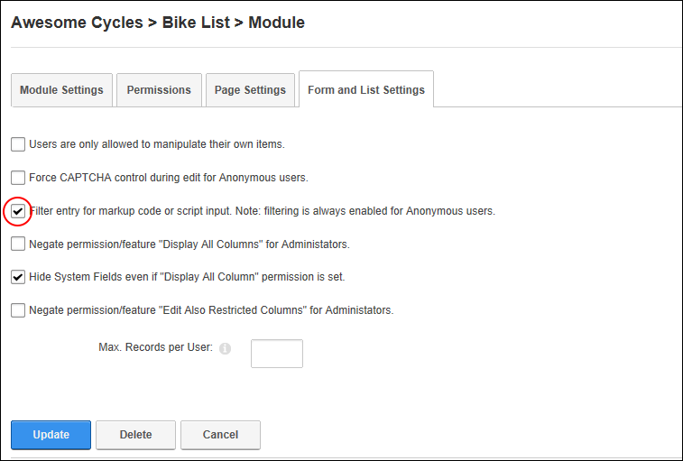

Enabling/Disabling Entry of Markup Code Scripts
How to enable filtering of data that contains markup code or scripts that is entered into a form or list on the Forms and Lists module. Note: Filtering is always enabled for Anonymous users.
-
- Select the Form and List Settings tab.
- At Filter entry for markup code or script input. Note: filtering is always enabled for Anonymous users., to enable filtering - OR - to remove filtering. This field is unchecked by default.
-
Click the Update button.

Enabling data filtering for lists and forms